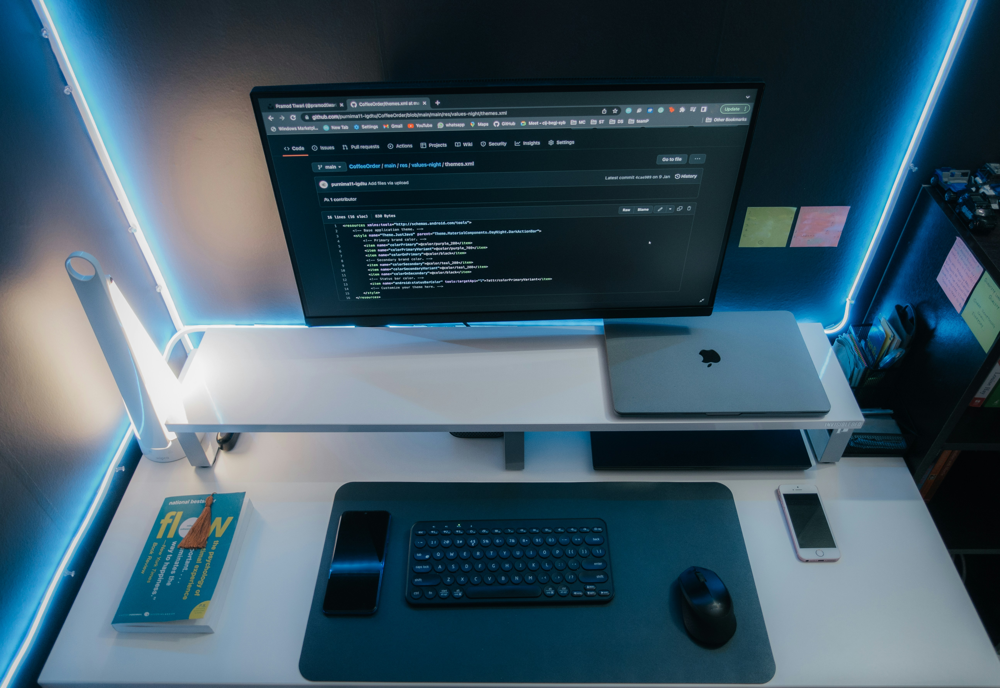

Computer Repairs
Simple solutions to common computer problems. Follow these guides to get your computer working properly again.

1. Computer Running Slowly
Problem: Your computer takes too long to open programs or respond.
How to fix it:
- Restart your computer.
- Close programs you are not using.
- Delete unnecessary files to free up storage.
2. Computer Screen Not Displaying
Problem: The computer turns on, but the monitor shows nothing.
How to fix it:
- Check that the monitor is powered on.
- Make sure the display cable is connected properly.
- Check that the monitor is using the correct input source.
3. Computer Overheating
Problem: Your computer becomes unusually hot or shuts down unexpectedly.
How to fix it:
- Place the computer in a well-ventilated area.
- Keep the air vents free from dust.
- Avoid blocking the cooling fans.
Safety tip: Switch off and unplug your computer before cleaning it. Avoid opening the power supply.